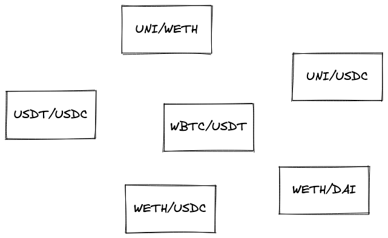

用户界面
在引入交换路径后，我们可以显著简化我们网页应用的内部结构。首先，每次交换现在都使用一个路径，因为路径不必包含多个池子。其次，现在更容易改变交换的方向：我们可以简单地反转路径。而且，由于通过CREATE2和唯一盐值统一生成池子地址，我们不再需要存储池子地址并关心代币顺序。
然而，如果不添加一个关键算法，我们就无法在网页应用中集成多池子交换。问问自己这个问题："如何在两个没有共同池子的代币之间找到路径？"
自动路由器
Uniswap实现了所谓的自动路由器，这是一种在两个代币之间找到最短路径的算法。此外，它还将一笔支付分割成多笔较小的支付，以找到最佳平均汇率。与未分割的交易相比，利润可以高达36.84%。这听起来很棒，但是我们不打算构建如此高级的算法。相反，我们将构建一些更简单的东西。
简单路由器设计
假设我们有一大堆池子：

在这样一团混乱中，我们如何找到两个代币之间的最短路径？
对于这类任务，最合适的解决方案是基于图的。图是一种由节点（代表某些东西的对象）和边（连接节点的链接）组成的数据结构。我们可以将那些混乱的池子转换成一个图，其中每个节点是一个代币（有一个池子），每条边是该代币所属的池子。因此，用图表示的池子是两个由一条边连接的节点。上面的池子变成了这个图：

图给我们带来的最大优势是能够遍历其节点，从一个节点到另一个节点，以找到路径。具体来说，我们将使用A*搜索算法。你可以自由学习该算法的工作原理，但在我们的应用中，我们将使用一个库来简化我们的工作。我们将使用的库集是ngraph.ngraph用于构建图，以及ngraph.path用于寻找路径（后者实现了A*搜索算法以及其他一些算法）。
在UI应用中，让我们创建一个路径查找器。这将是一个类，当实例化时，将一系列代币对转换为图，以便稍后使用该图找到两个代币之间的最短路径。
import createGraph from 'ngraph.graph';
import path from 'ngraph.path';
class PathFinder {
constructor(pairs) {
this.graph = createGraph();
pairs.forEach((pair) => {
this.graph.addNode(pair.token0.address);
this.graph.addNode(pair.token1.address);
this.graph.addLink(pair.token0.address, pair.token1.address, pair.tickSpacing);
this.graph.addLink(pair.token1.address, pair.token0.address, pair.tickSpacing);
});
this.finder = path.aStar(this.graph);
}
...
在构造函数中，我们创建一个空图并用链接的节点填充它。每个节点是一个代币地址，链接具有相关数据，即tick间距——我们将能够从A找到的路径中提取这些信息。初始化图后，我们实例化A算法的实现。
接下来，我们需要实现一个函数，该函数将在代币之间找到路径并将其转换为代币地址和tick间距的数组：
findPath(fromToken, toToken) {
return this.finder.find(fromToken, toToken).reduce((acc, node, i, orig) => {
if (acc.length > 0) {
acc.push(this.graph.getLink(orig[i - 1].id, node.id).data);
}
acc.push(node.id);
return acc;
}, []).reverse();
}
this.finder.find(fromToken, toToken)返回一个节点列表，但遗憾的是，它不包含节点之间边的信息（我们在边中存储tick间距）。因此，我们调用this.graph.getLink(previousNode, currentNode)来查找边。
现在，每当用户更改输入或输出代币时，我们可以调用pathFinder.findPath(token0, token1)来构建一个新的路径。